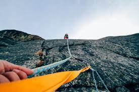
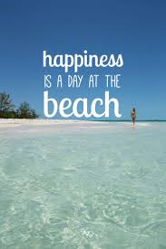

The relative simplicity of the algorithm makes it a popular first choice amongst optimizing algorithms. It is used widely in artificial intelligence, for reaching a goal state from a starting node. Different choices for next nodes and starting nodes are used in related algorithms. Although more advanced algorithms such as simulated annealing or tabu search may give better results, in some situations hill climbing works just as well. Hill climbing can often produce a better result than other algorithms when the amount of time available to perform a search is limited, such as with real-time systems, so long as a small number of increments typically converges on a good solution (the optimal solution or a close approximation). At the other extreme, bubble sort can be viewed as a hill climbing algorithm (every adjacent element exchange decreases the number of disordered element pairs), yet this approach is far from efficient for even modest N, as the number of exchanges required grows quadratically.
There’s nothing like a relaxing day at the beach to soak up all your worries. Just closing your eyes and imagining the soft sand caressing your toes as gentle waves lap the shore and the sun shines warmly down is enough to bring about a feeling of tranquillity. However, if that doesn’t work, these quotes about the beach are guaranteed to deliver you to a blissful beach without leaving home!
While we absolutely love road trips, adventures in the mountains and long hikes, there’s something indulgent about a beach vacation that makes it so special. It’s been a while since we’ve had a beach holiday, but that’s not stopped us daydreaming about the seaside.
As a dedication to one of my favourite places in the world, I decided to put together some of my favourite beach quotes ready for the summer months ahead! So whether you’re looking for beach Instagram captions to accompany your photos or quotes about the beach to transport you away in a tropical daydream, I’ve got you covered!
Filled with charm and plenty of friendly locals, small towns are synonymous with American life. To help you decide which destinations are the best small towns to visit in the USA, U.S. News evaluated places with a population of less than 50,000 people that offer plenty of restaurants and attractions, plus have a unique character all their own. So, ditch the city crowds and start planning your small-town getaway, and don't forget to vote for your favorite destination to help us determine next year's list. (Note: Some of the below destinations may be affected by the coronavirus outbreak. Check with the CDC and the U.S. Department of State before traveling.)